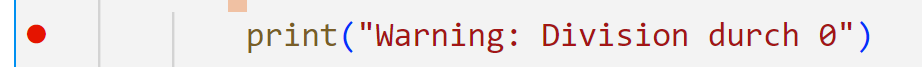

def bereinige(werte):
return [w for w in werte if w]
def berechne(werte):
return sum(werte) / len(werte)
def formatiere(mittel):
return f"Mittelwert: {mittel:.2f} m"
def verarbeite_daten(daten):
bereinigt = bereinige(daten)
ergebnis = berechne(bereinigt)
return formatiere(ergebnis)Debugging
Everyone knows that debugging is twice as hard as writing a program in the first place. So if you’re as clever as you can be when you write it, how will you ever debug it?
— Kernighan & Plauger (Kernighan und Plauger 1978)
TL;DR
Ein Programm kann ohne Exception laufen und trotzdem ein falsches Ergebnis liefern. Solche stillen logischen Fehler finden wir systematisch in fünf Schritten: reproduzieren, isolieren, eine Hypothese bilden, die Ausführung inspizieren, beheben und erneut verifizieren. print(), logging und der Debugger sind Werkzeuge für den Inspektionsschritt. Ein Walkthrough (schrittweiser Durchgang) durch ein Modul mit mehreren Funktionen führt die Schritte am Pegelstand-Modul aus.
Debuggen in fünf Schritten
Falsche Ausgabe ohne Exception
Nicht jeder Fehler kündigt sich durch eine Fehlermeldung an. Besonders tückisch sind logische Fehler: Das Programm läuft ohne Exception durch, liefert aber ein falsches Ergebnis, und gerade deshalb fallen solche Fehler oft erst spät auf. Bei umfangreichem Code, den wir nicht selbst geschrieben haben, etwa aus einem KI-Werkzeug, hilft Hinsehen allein nur begrenzt. Wir brauchen ein systematisches Vorgehen, das uns vom falschen Ergebnis zur Ursache führt.
Als durchgehendes Beispiel dient ein kleines Modul für Pegelstände in Metern. Die Funktion bereinige entfernt fehlende Messwerte, berechne bildet den Mittelwert, formatiere erzeugt die Ausgabe, und verarbeite_daten ruft die drei Funktionen nacheinander auf. Das Beispiel ist bewusst kurz, damit wir die Methode in Ruhe verfolgen können; in realem Code liegt ein solcher Fehler zwischen deutlich mehr Zeilen. Die Pegelreihe enthält gültige Messwerte von 0,0 m, etwa bei einem Wasserstand am Pegelnullpunkt. Zur Erinnerung: In Bedingungen gelten None, die Zahl 0 und 0.0 sowie leere Sammlungen als falsch (siehe Verzweigung (S05)). Dieses Detail wird sich als entscheidend erweisen.
verarbeite_daten([0.0, 1.2, 0.8, None, 1.0]) # Pegelstände in m'Mittelwert: 1.00 m'Der Mittelwert der gültigen Messwerte 0,0 m, 1,2 m, 0,8 m und 1,0 m beträgt 0,75 m. Das Modul gibt jedoch 1,00 m aus, ohne dass eine Exception auftritt. Auf den ersten Blick wirkt der Code korrekt, und die Ausgabe sieht plausibel aus; ohne die von Hand berechnete Erwartung würden wir den Fehler nicht bemerken. Um die Ursache zu finden, müssen wir die Ausführung beobachten.
Lernziel dieser Sitzung ist es, einen solchen stillen logischen Fehler zu reproduzieren, mit einem Test einzugrenzen, mit dem Debugger zu lokalisieren und nach dem Fix erneut zu verifizieren.
Fünf Schritte vom falschen Ergebnis zur Ursache
Wahlloses Ändern von Code verdeckt die Ursache oft, statt sie zu beseitigen. Wir debuggen deshalb systematisch in fünf Schritten, in Anlehnung an das wissenschaftliche Debugging nach Zeller (Zeller 2009): Der Fehler wird wie ein Experiment behandelt, mit Beobachtung, Hypothese und Überprüfung. Die fünf Schritte sind eine vereinfachte Zusammenfassung seines Vorgehens.
Zunächst reproduzieren wir den Fehler mit einem minimalen Input und isolieren die fehlerhafte Funktion mit einem Unit-Test. Danach bilden wir eine Hypothese über die verletzte Annahme und inspizieren die Ausführung, um die Hypothese zu prüfen. Schließlich beheben wir den Fehler minimal und verifizieren das Ergebnis erneut. Wir führen zunächst die Schritte 1 bis 3 am Pegelstand-Modul aus. Danach lernen wir mit print(), logging und dem Debugger die Werkzeuge für Schritt 4 kennen, wenden sie im Walkthrough an und schließen mit Schritt 5 ab.
Schritt 1 – Reproduzieren
Zuerst suchen wir den kleinsten Input, der das Fehlverhalten auslöst. Einen Fehler, den wir nicht zuverlässig reproduzieren können, lässt sich weder lokalisieren noch nach einem Fix überprüfen. Wir entfernen daher alles, was zum Fehler nichts beiträgt: Statt der fünf Pegelstände genügen zwei Werte, 0.0 und 1.0. Für diesen Input lässt sich das erwartete Ergebnis im Kopf bestimmen, denn der Mittelwert beträgt 0,5 m.
Da keine Exception auftritt (siehe Exceptions (S07)), fehlt der Traceback als Startpunkt, und wir beginnen deshalb beim falschen Ergebnis. Tritt der Fehler nur manchmal auf (nichtdeterministisches Verhalten), müssen wir zunächst die Bedingungen finden, unter denen er auftritt.
verarbeite_daten([0.0, 1.0]) # erwartet: 'Mittelwert: 0.50 m''Mittelwert: 1.00 m'Auch mit zwei Werten liefert das Modul 1,00 m statt 0,50 m. Damit haben wir einen kompakten Testfall, den wir in den folgenden Schritten wiederverwenden.
Schritt 2 – Isolieren
Als Nächstes grenzen wir den Fehler auf eine Funktion ein. Dazu prüfen wir die Stufen der Verarbeitungskette nacheinander vom Input zum Output, jede einzeln mit einem Unit-Test, der genau eine Funktion aufruft; das übrige Programm ist dafür nicht nötig. Wir beginnen bei bereinige, der ersten Stufe, denn ein falscher Wert dort setzt sich in allen folgenden Stufen fort. Wie Unit-Tests aufgebaut werden, behandelt Unit-Tests (S08). Für bereinige formulieren wir die Erwartung als Assertion: Der Input [0.0, 1.0] muss unverändert zurückkommen, denn beide Werte sind gültige Messwerte.
def test_bereinige_behaelt_null():
assert bereinige([0.0, 1.0]) == [0.0, 1.0]Für berechne und formatiere genügt ein Vergleich mit dem von Hand bestimmten Ergebnis: Der Mittelwert von 0,0 und 1,0 ist 0,5, und dieser Wert wird als Mittelwert: 0.50 m formatiert.
berechne([0.0, 1.0]) == 0.5Trueformatiere(0.5) == "Mittelwert: 0.50 m"TrueBeide Vergleiche ergeben True; diese beiden Stufen arbeiten für unsere Werte also korrekt. Gleitkommazahlen vergleichen wir in der Praxis meist mit einer Toleranz; hier sind die Werte exakt darstellbar, sodass == genügt. Nun führen wir den Test für bereinige aus.
test_bereinige_behaelt_null()--------------------------------------------------------------------------- AssertionError Traceback (most recent call last) Cell In[10], line 1 ----> 1 test_bereinige_behaelt_null() Cell In[7], line 2, in test_bereinige_behaelt_null() 1 def test_bereinige_behaelt_null(): ----> 2 assert bereinige([0.0, 1.0]) == [0.0, 1.0] AssertionError:
Die Assertion schlägt mit einem AssertionError fehl. Damit ist das Problem auf die Funktion bereinige eingegrenzt, und wir müssen den Rest des Moduls nicht weiter untersuchen. Ein bestandener Test belegt dabei nur, dass eine Funktion für den getesteten Input korrekt arbeitet, nicht dass sie überall korrekt ist.
Schritt 3 – Hypothese bilden
Nun formulieren wir die Abweichung zwischen Erwartung und Beobachtung präzise. Für den minimalen Input aus Schritt 1 erwarten wir von bereinige die Liste [0.0, 1.0], beobachten aber nur [1.0]; die Messung 0.0 fehlt. Eine gute Hypothese benennt die Annahme des Codes, die diese Abweichung erklären könnte. Dazu stellen wir drei Fragen: Was erwarten wir, was liefert der Code tatsächlich, und welche Annahme könnte falsch sein?
bereinige([0.0, 1.0])[1.0]Die Ausgabe bestätigt, dass die Funktion den Wert 0.0 entfernt, ohne uns darüber zu informieren. Welche Annahme dahintersteckt, klären wir im nächsten Abschnitt.
Schritt 3 – Typische falsche Annahmen
Bei der Suche nach der verletzten Annahme hilft eine Liste typischer Kandidaten. Code trifft stillschweigend Annahmen über den Datentyp (etwa der Text "1.2" statt der Zahl 1.2), über die Reihenfolge der Parameter, über Randfälle und über Indizes, bei denen leicht ein Off-by-one-Fehler entsteht.
Wir gleichen die Kandidaten mit unserer Beobachtung ab. Die Werte sind Zahlen, bereinige hat nur einen Parameter und arbeitet nicht mit Indizes. Es bleibt der Randfall: In Python gilt auch 0.0 als falsch (siehe Verzweigung (S05)), obwohl es hier ein gültiger Messwert ist. Unsere Hypothese lautet daher: Die Bedingung if w verwirft nicht nur None, sondern auch 0.0. Die beiden folgenden Zellen prüfen die Wahrheitswerte direkt.
bool(None)Falsebool(0.0)FalseBeide Ausdrücke liefern False. Die Bedingung kann also nicht zwischen einem fehlenden Wert und der Messung null unterscheiden. Die Hypothese ist damit plausibel, bestätigt ist sie aber erst, wenn wir die Ausführung beobachtet haben.
Schritt 4 – Ausführung inspizieren
Statische Überlegungen genügen nicht, um eine Hypothese zu bestätigen; wir müssen die Ausführung beobachten. Der Debugger lohnt sich besonders, wenn die Ursache innerhalb einer Funktion liegt und sich nicht allein durch einen Test an einer Funktionsgrenze erkennen lässt. Wir setzen einen Breakpoint (Haltepunkt, an dem der Debugger die Ausführung anhält) auf die erste Zeile im Körper der Einstiegsfunktion verarbeite_daten und steigen mit Step Into (in die aufgerufene Funktion hineinsteigen) bis zur verdächtigen Funktion bereinige. So sehen wir, an welcher Stelle Erwartung und tatsächlicher Zustand auseinanderlaufen.
Der Unterschied zu print() liegt im Umfang der Information: print() zeigt nur die Werte, die wir vorher ausgewählt haben, der Debugger dagegen den Zustand am Haltepunkt, also Variablen und Aufrufstapel. Zunächst stellen wir die Werkzeuge im Einzelnen vor; danach führen wir diesen Schritt im Walkthrough am Pegelstand-Modul aus.
print, logging und Debugger
print()-Debugging – Zustände sichtbar machen
Die Fünf-Schritt-Strategie beschreibt das Vorgehen; die folgenden Werkzeuge machen die Beobachtungen sichtbar, die wir dafür brauchen. Entscheidend ist nicht die Wahl des Werkzeugs, sondern die systematische Anwendung der Strategie. Reproduktion und Isolierung schaffen einen stabilen Testfall, Hypothesen lenken den Blick, und print(), logging oder ein Debugger liefern die Informationen für die Inspektion und zur anschließenden Verifikation. Wir stellen die drei Werkzeuge in aufsteigender Leistungsfähigkeit vor, beginnend mit dem einfachsten.
Logische Fehler treten häufig erst dynamisch auf und lassen sich oft nicht mit statischer Code-Analyse, etwa durch Lint-Werkzeuge, finden. Hier müssen wir den aktuellen Programmfluss nachvollziehen. Dies nennen wir Debugging. Die elementare Form ist das print()-Debugging, bei dem wir den Code gezielt mit print()-Befehlen versehen.
Wir ergänzen bereinige um zwei Anweisungen: eine für die Eingabe und eine für das Ergebnis. Üblich ist es, Eingangsparameter, Zwischenergebnisse sowie Fehler- und Warnmeldungen auszugeben.
def bereinige(werte):
print(f"Debug: Eingabe {werte}")
ergebnis = [w for w in werte if w]
print(f"Debug: Ausgabe {ergebnis}")
return ergebnisDer Aufruf mit dem minimalen Input aus Schritt 1 zeigt sofort, dass die Messung 0.0 auf dem Weg durch die Funktion verloren geht.
bereinige([0.0, 1.0])Debug: Eingabe [0.0, 1.0]
Debug: Ausgabe [1.0][1.0]Das ist der Vorteil von print(): Es ist ohne Konfiguration sofort einsetzbar. Die Grenzen liegen im Umfang und im Aufwand. Wir sehen nur die Werte, die wir vorher ausgewählt haben, nicht den vollständigen Zustand. Instrumentieren wir alle vier Funktionen des Moduls mit je zwei Ausgaben, entstehen bei jedem Aufruf acht Zeilen; in einer Schleife über viele Messreihen verdeckt diese Flut die eine Zeile, auf die es ankommt. Nach der Fehlersuche müssen wir die Anweisungen außerdem wieder entfernen.
logging – Gefilterte Sichtbarkeit
Bei komplexeren Programmen stößt print() an Grenzen, deshalb verwenden wir das Modul logging (Python Software Foundation, o. J.a). Es ordnet jeder Ausgabe ein Log-Level zu und erlaubt, anhand dieses Levels zu filtern. Die Level heißen aufsteigend nach Schwere DEBUG, INFO, WARNING, ERROR und CRITICAL. Das eingestellte Level und alle höheren werden ausgegeben: Bei WARNING erscheinen Warnungen, Fehler und kritische Meldungen, bei DEBUG erscheint alles.
Der Preis dafür ist eine einmalige Konfiguration. Ohne Handler gibt Python nur Warnungen und Fehler aus, daher fügen wir zuerst einen StreamHandler hinzu, der die Nachrichten ausgibt. In bereinige ersetzen wir die Ausgaben durch Aufrufe mit passendem Level: Die Eingabe melden wir als DEBUG, und verwirft die Funktion Werte, melden wir das als WARNING.
Zwei Stolperfallen sind zu beachten. Führen wir die Konfigurationszelle erneut aus, käme ohne die Zeile log.handlers.clear() ein weiterer Handler hinzu, und die Zeilen erschienen doppelt. Zudem wird ein f-String auch bei deaktiviertem Level formatiert; empfohlen ist daher log.debug("Eingabe: %s", werte).
import logging
log = logging.getLogger("pegel")
log.handlers.clear() # keine doppelten Ausgaben bei erneutem Ausführen
sh = logging.StreamHandler()
log.addHandler(sh)
def bereinige(werte):
log.debug(f"Eingabe: {werte}")
ergebnis = [w for w in werte if w]
if len(ergebnis) < len(werte):
log.warning(f"{len(werte) - len(ergebnis)} von {len(werte)} Werten verworfen")
return ergebnisWenn wir die Funktion mit dem minimalen Input aufrufen, sehen wir bei Level WARNING nur noch die Meldung über den verworfenen Wert.
log.setLevel(logging.WARNING) # nur Warnungen und Fehler
bereinige([0.0, 1.0])1 von 2 Werten verworfen[1.0]Bei Bedarf, etwa bei der Fehlersuche, senken wir das Log-Level auf DEBUG, um alle Nachrichten zu erhalten. Zusätzlich erscheint nun die Eingabe.
log.setLevel(logging.DEBUG) # alle Meldungen beim Debuggen
bereinige([0.0, 1.0])Eingabe: [0.0, 1.0]
1 von 2 Werten verworfen[1.0]Optional können wir automatisch weitere Informationen hinzufügen. Bisher gibt der Handler nur die Nachricht aus. Mit einem Format ergänzen wir Zeit, Namen des Loggers (pegel) und Level, zum Beispiel um zu verstehen, wann etwas passiert ist.
formatter = logging.Formatter('%(asctime)s %(name)s %(levelname)s: %(message)s')
sh.setFormatter(formatter)
log.setLevel(logging.INFO)
bereinige([0.0, 1.0])2026-11-15 19:56:08,130 pegel WARNING: 1 von 2 Werten verworfen[1.0]Logging ist besonders bei Programmen ohne Bildschirm wichtig, etwa auf Servern, auf denen wir keinen Debugger anhängen können. Solange alles fehlerfrei läuft, arbeitet die Anwendung im Log-Level INFO mit wenigen Ausgaben. Tritt ein Fehler auf, setzen wir das Level auf DEBUG und suchen in den detaillierten Logs nach Informationen, um den Fehler einzugrenzen.
Grafischer Debugger – Voller Zustandsüberblick
Der Debugger ist das leistungsfähigste der drei Werkzeuge, denn er zeigt nicht ausgewählte Werte, sondern den Zustand des Programms am Haltepunkt: lokale und globale Variablen sowie den Aufrufstapel. Integrierte Entwicklungsumgebungen (IDEs) wie VS Code enthalten einen Debugger, der die dynamische Ausführung des Codes unterbrechen kann. Ohne IDE genügt der Aufruf breakpoint() im Code, der den eingebauten Debugger pdb startet (Python Software Foundation, o. J.b). Ziel ist es, kurz vor Auftreten des Fehlers die Ausführung anzuhalten, um das Fehlverhalten genau beobachten zu können.
Wir unterscheiden zwei Formen der Unterbrechung:
- Die Unterbrechung in bestimmten Code-Zeilen mit Hilfe von Breakpoints
- Die Unterbrechung bei bestimmten Exceptions
Neben einfachen Breakpoints unterstützen Debugger bedingte Breakpoints, die nur bei erfüllter Bedingung halten, zum Beispiel bei w == 0.0. Außerdem gibt es Watch-Ausdrücke, die bei jedem Halt ausgewertet werden und so einen Wert über mehrere Schritte verfolgen. Grenzen hat der Debugger bei zeitabhängigen Fehlern, denn das Anhalten kann das Verhalten verändern, und auf Servern lässt sich oft kein Debugger anhängen; dort bleibt das Logging das Mittel der Wahl.
Debugging in Jupyter-Notebooks in VS Code
Die Oberflächen unterscheiden sich je nach IDE, bieten aber ähnliche Funktionen. Als Beispiel betrachten wir ein Jupyter-Notebook in VS Code. Die Screenshots zeigen dabei eine kleine Divisionsfunktion; die Anwendung auf das Pegelstand-Modul folgt im Walkthrough.
Dafür klicken wir in der IDE links neben eine Zeile, um einen Breakpoint (roter Punkt) zu setzen. Wir setzen ihn auf Zeile 11, die Ausgabe der Warnung.

Anschließend führen wir den Code in einer speziellen Debug-Umgebung aus, die die Ausführung unterbrechen kann. In VS Code starten wir sie durch das Symbol .
def division(zaehler, nenner):
log.debug(f"Eingabe Zaehler: {zaehler}")
log.debug(f"Eingabe Nenner: {nenner}")
if not isinstance(nenner, (int, float)):
log.error(f"Nenner nicht vom Datentyp `int` oder `float`, sondern vom Typ {type(nenner)}")
raise ValueError(f"Nenner nicht vom Datentyp `int` oder `float`, sondern vom Typ {type(nenner)}")
elif not isinstance(zaehler, (int, float)):
log.error(f"Zaehler nicht vom Datentyp `int` oder `float`, sondern vom Typ {type(zaehler)}")
raise ValueError(f"Zaehler nicht vom Datentyp `int` oder `float`, sondern vom Typ {type(zaehler)}")
elif not nenner:
log.warning("Division durch 0")
return None
else:
ergebnis = zaehler / nenner
log.info(f"Das Ergebnis von {zaehler}/{nenner} = {ergebnis}")
return ergebnis
division(10, 0)2026-11-15 19:56:08,136 pegel WARNING: Division durch 0Damit startet der Debug-Modus, und die Ausführung hält am Breakpoint. Die aktuelle Zeile ist hervorgehoben, und das Fenster zeigt die Variablen des aktuellen Gültigkeitsbereichs, hier zaehler = 10 und nenner = 0. Zusätzlich zeigt der Aufrufstapel (Call Stack), in welcher Funktion wir gerade stehen und von welcher Funktion sie aufgerufen wurde.

In der Debug-Umgebung gehen wir dann Zeile für Zeile vor, indem wir drücken. So können wir nachvollziehen, wie das Programm abläuft und welche Variablen sich ändern.
Walkthrough durch ein Modul
Module bestehen aus mehreren Funktionen
Code besteht in der Praxis selten aus einer einzelnen Funktion, sondern aus mehreren, die aufeinander aufbauen. Dann genügt es nicht mehr, einzelne Werte mit print() auszugeben: Wir müssten in jeder Funktion Ausgaben ergänzen, weil der Fehler überall stecken kann. Der Debugger folgt dem Aufrufstapel dagegen durch alle Ebenen.
Wir kehren dazu zum Pegelstand-Modul zurück. Es besteht aus vier Funktionen: verarbeite_daten ruft nacheinander bereinige, berechne und formatiere auf und reicht dabei jeweils das Ergebnis der vorherigen Stufe weiter. Ein falscher Wert in der ersten Stufe setzt sich deshalb unbemerkt bis zur Ausgabe fort.
Breakpoint am Einstiegspunkt setzen
Wir starten am Anfang der Aufrufkette und nicht tief im Code. Am Einstiegspunkt kennen wir den Input, und wir sehen den Zustand, bevor eine Funktion ihn verändert hat. Dazu setzen wir den ersten Breakpoint auf die erste Zeile im Körper der Einstiegsfunktion verarbeite_daten und rufen sie mit dem minimalen Fehler-Input [0.0, 1.0] aus Schritt 1 auf. Die Ausführung hält an, und wir sehen den Eingangszustand vor dem ersten Aufruf. Von hier aus steigen wir mit Step Into zur verdächtigen Funktion.
Durch Funktionsaufrufe schrittweise gehen
Um dem Programm durch die Aufrufkette zu folgen, stehen im Debugger drei Navigationsbefehle zur Verfügung. Mit Step Into steigen wir in die aufgerufene Funktion hinein, mit Step Over führen wir sie aus, ohne hineinzusteigen, und mit Step Out führen wir sie zu Ende und kehren zur aufrufenden Funktion zurück.
Welcher Befehl passt, hängt vom Verdacht ab. Ist eine Funktion verdächtig, nutzen wir Step Into, um ihr Inneres zu sehen. Ist sie bekanntermaßen korrekt, nutzen wir Step Over und sparen uns den Weg durch Code, der den Fehler nicht enthält. Sind wir zu tief geraten, bringt uns Step Out zurück. In unserem Beispiel steigen wir bei bereinige(daten) hinein, denn dort hat der Unit-Test aus Schritt 2 den Fehler eingegrenzt.
Zustand auf jeder Ebene inspizieren
Nach jedem Funktionsaufruf prüfen wir, ob der Rückgabewert der Erwartung entspricht. Im Variablenfenster sehen wir dazu die lokalen Variablen der aktuellen Funktion, und der Aufrufstapel (Call Stack) zeigt, in welcher Funktion wir gerade stehen und von welcher Funktion sie aufgerufen wurde.
Auf unser Beispiel angewendet heißt das: Nach der Zeile bereinigt = bereinige(daten) enthält bereinigt nur [1.0], die Messung 0.0 fehlt. Damit ist der Fehler in bereinige lokalisiert, nämlich an der Stelle, an der Erwartung und Zustand erstmals auseinanderlaufen. Die Hypothese aus Schritt 3 prüfen wir gezielt, zum Beispiel mit bool(0.0) in der Debug-Konsole. Bestätigt sie sich, beheben wir den Fehler im nächsten Schritt. Der grafische Debugger zeigt uns den Zustand jeder Ebene, ohne dass wir den Code wie bei print() ändern müssen.
Schritt 5 – Beheben und erneut verifizieren
Im Walkthrough haben wir die Hypothese bestätigt; nun korrigieren wir nur die identifizierte Ursache. Ein minimaler Fix ändert so wenig Code wie nötig, damit wir sicher sind, dass die Änderung genau den Fehler betrifft und nichts anderes. Hier ersetzen wir die Bedingung if w durch if w is not None, sodass nur noch fehlende Werte verworfen werden.
def bereinige(werte):
return [w for w in werte if w is not None]Anschließend führen wir den Unit-Test aus Schritt 2 erneut aus und rufen das Modul mit dem ursprünglichen Input auf.
test_bereinige_behaelt_null()verarbeite_daten([0.0, 1.2, 0.8, None, 1.0])'Mittelwert: 0.75 m'Der Test besteht, und das Modul liefert mit 0,75 m das erwartete Ergebnis. Die erneute Verifikation endet aber nicht beim ursprünglichen Fehler; wir prüfen auch angrenzende Funktionen und Randfälle. Filtert bereinige alle Werte heraus, etwa bei [None], teilt berechne durch null. Diesen Randfall lassen wir hier offen und behandeln ihn in Exceptions (S07).
verarbeite_daten([None]) # Randfall--------------------------------------------------------------------------- ZeroDivisionError Traceback (most recent call last) Cell In[34], line 1 ----> 1 verarbeite_daten([None]) # Randfall Cell In[3], line 12, in verarbeite_daten(daten) 10 def verarbeite_daten(daten): 11 bereinigt = bereinige(daten) ---> 12 ergebnis = berechne(bereinigt) 13 return formatiere(ergebnis) Cell In[3], line 5, in berechne(werte) 4 def berechne(werte): ----> 5 return sum(werte) / len(werte) ZeroDivisionError: division by zero
Die Zelle bricht mit einer Exception ab, weil die bereinigte Liste leer ist. Auch NaN-Werte (Not a Number), wie sie in Messreihen vorkommen, passieren den neuen Filter is not None und würden den Mittelwert verfälschen. Ein Fix löst also selten alle Probleme einer Funktion, und deshalb gehört die Prüfung der Randfälle zu diesem Schritt.
Stammt der Code aus einem KI-Werkzeug, geben wir die Diagnose zuletzt als präzisen Prompt an die KI zurück. Debugging ist damit der Verifikationsschritt des agentischen Zyklus auf Ausführungsebene.
Zusammengefasst führt die Strategie vom falschen Ergebnis über einen minimalen Input, einen Unit-Test und eine Hypothese zur Ursache. Der Debugger liefert die Beobachtung, die die Hypothese bestätigt, und der erneute Test belegt, dass der Fix wirkt.
Quiz
---
shuffleQuestions: false
shuffleAnswers: true
---
### Welche Reihenfolge hat die Fünf-Schritt-Strategie zum Debuggen?
- [x] Reproduzieren, Isolieren, Hypothese bilden, Inspizieren, Beheben und erneut verifizieren
- [ ] Inspizieren, Beheben, Reproduzieren, Isolieren, Hypothese bilden
- [ ] Hypothese bilden, Beheben, Isolieren, Reproduzieren, Inspizieren
- [ ] Beheben, erneut verifizieren, Reproduzieren, Isolieren, Inspizieren
### Ein Programm liefert ohne Fehlermeldung ein falsches Ergebnis. Wir haben den Fehler mit einem kleinen Input reproduziert. Was ist der nächste Schritt?
- [x] Die einzelnen Funktionen mit Unit-Tests prüfen, um die fehlerhafte Funktion einzugrenzen
- [ ] Sofort den Code umschreiben, der am verdächtigsten aussieht
- [ ] Den Fehler im Code beheben und danach erst testen
- [ ] Die KI mit dem ursprünglichen Prompt noch einmal fragen
### Ein Test erwartet `[0.0, 1.0]`, die Funktion liefert aber `[1.0]`. Welche Hypothese ist am plausibelsten?
- [x] Die Funktion verwirft den gültigen Wert 0.0, zum Beispiel durch eine Bedingung `if w`
- [ ] Die Liste ist zu lang
- [ ] Python kann keine Gleitkommazahlen speichern
- [ ] Der Test ist grundsätzlich falsch
### Was gibt `bool(0.0)` in Python zurück?
- [x] `False`
- [ ] `True`
- [ ] `None`
- [ ] Einen Fehler
### Wozu dient ein Unit-Test in Schritt 2 (Isolieren)?
- [x] Er prüft die verdächtige Funktion einzeln und grenzt den Fehler auf sie ein
- [ ] Er ersetzt den Debugger vollständig
- [ ] Er formatiert den Code automatisch
- [ ] Er stellt sicher, dass kein Fehler mehr im Programm steckt
### Was zeigt der Aufrufstapel (Call Stack) im Debugger?
- [x] In welcher Funktion die Ausführung gerade steht und von welcher Funktion sie aufgerufen wurde
- [ ] Die Werte aller Variablen des gesamten Programms
- [ ] Alle bisher ausgeführten Zeilen
- [ ] Die Laufzeit jeder Funktion
### Welche Debugger-Aktion verwenden wir, wenn eine Funktion bekanntermaßen korrekt ist?
- [x] Step Over: Die Funktion wird ausgeführt, ohne hineinzusteigen
- [ ] Step Into: Der Debugger steigt in die Funktion hinein
- [ ] Step Out: Der Debugger beendet das gesamte Programm
- [ ] Gar keine; es muss immer Step Into verwendet werden
### `verarbeite_daten([0.0, 1.2, 0.8, None, 1.0])` liefert 1.00 m statt 0.75 m. Welcher Input ist die kleinste Reproduktion?
- [x] `verarbeite_daten([0.0, 1.0])`: Erwartet wird 0.50 m, das Modul liefert 1.00 m
- [ ] `verarbeite_daten([0.0, 1.2, 0.8, None, 1.0])`
- [ ] `verarbeite_daten([1.0])`
- [ ] `verarbeite_daten([None])`
### Was ist der Zweck von `logging` in Python?
- [x] Protokollierung von Ereignissen und Fehlern, filterbar nach Log-Level
- [ ] Optimierung der Programmausführung
- [ ] Erstellen von Benutzeroberflächen
- [ ] Automatisches Testen von Funktionen
Referenzen
Kernighan, Brian W., und P. J. Plauger. 1978. The Elements of Programming Style. 2. Aufl. New York: McGraw-Hill.
Python Software Foundation. o. J.a. „Logging HOWTO“. Python 3 Documentation. https://docs.python.org/3/howto/logging.html.
———. o. J.b. „pdb: The Python Debugger“. Python 3 Documentation. https://docs.python.org/3/library/pdb.html.
Zeller, Andreas. 2009. Why Programs Fail: A Guide to Systematic Debugging. 2. Aufl. Burlington, MA: Morgan Kaufmann.